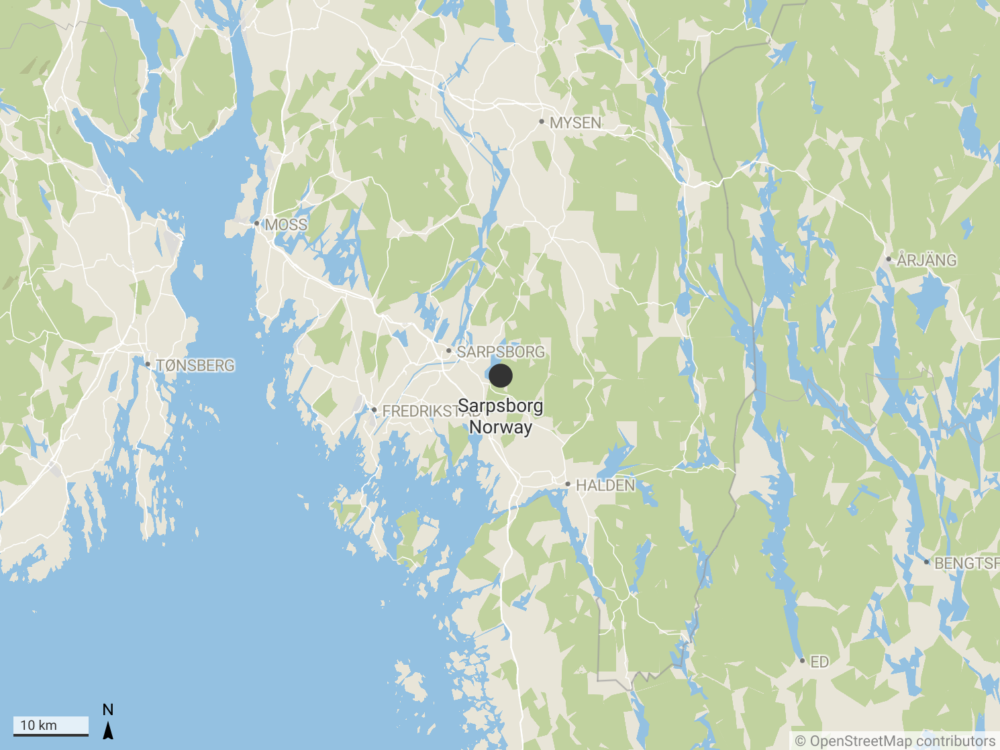
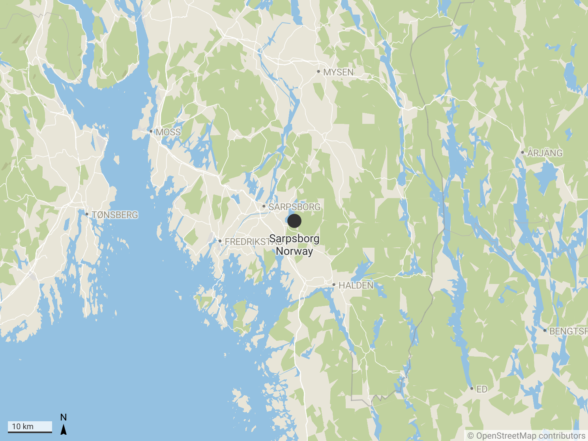

Verdensmesters cup i fotball som arrangeres i Qatar i år (2022) vil være den første VM som arrangeres i Midtøsten. I tillegg første gang i cupens historie vil den arrangeres i vinterhalvåret (Nov-Des), grunnen til dette er ekstrem varmen og høy luftfuktighet i sommerværet. En annen faktor som gjør denne turneringen forskjellig fra de andre er antall land som deltar i cupen. Vanligvis er det 32 land som deltar i cupen, men denne cupen blir den første hvor 48 land konkurrerer om å være verdensmester.
Men utover alt dette var det noe annet som var mye mer kontroversielt. Qatar er kjent for de grove menneskerettighetsbruddene. Både når det gjelder kvinners rettigheter, LGBTQ+ rettigheter eller slaveri arbeid.
FIFA verdensmesterskap i Qatar 2022-stadioner
I 2010 bestemte FIFA at Qatar skal bli vert for VM i 2022, da satt i gang Qatar myndighetene stort prosjekt for å utbre infrastruktur i landet. Det ble bygget 8 nye fotball stadioner, jernbanestasjoner og hoteller. Det kostet Qatar over 200bilioner dollar, men det var ikke eneste prisen for dette (kilde).
Nemlig ifølge The Guardian har over 6500 arbeidsinnvandrere omkommet under utbygning av alle ulike prosjekter. Amnesty har gjort en undersøkelse hvor de har funnet ut at flere av arbeiderne som omkom, jobbet lange dager (12-13t skift) i høye temperaturer (Opptil 40 grader). Flere arbeidere ble funnet livløs på rommene sine. Samtidig flere som ønsket å dra hjem ble nektet det ved at demmes ID kort/Pass har blitt fratatt. Noe som er et åpenbart brudd på menneskerettighet. Familiene har heller ikke fått noe slags form for erstatning (kilde).
Til og med USAs utenriksminister, Anthony Blinken uttalte at uten arbeidere, inkludert mange arbeidsinnvandrere, ville dette verdensmesterskapet rett og slett ikke vært mulig.
Foto: Unsplash
Vi har gått ut på gata og spurt noen tilfeldige personer om hva de syntes om dette emnet. I tillegg leste vi en del historier angående menneskerettighetsbrudd fra Amnesty International og fikk vi deres tanker om dette, også.
Senor Bewar Hussein
Viste du at over 6500 gjestearbeidere (innvandrere) døde under bygningen av infrastruktur for fotball-VM 2022 i Qatar?
-Ååå, det var jeg ikke klar over. Det er masse mennesker! Det er helt sjukt jo. Svarer Senor
På spørsmålet om hvem føler du burde ta ansvar for alle de livene som ble tapt?
Svarer Senor med. -Jeg føler at Qatar staten burde ta ansvar for dette.
-Det gjør meg dypt vondt å høre de smertefulle historiene som bare en måned med moro har lagt bak seg. Dette er bare noen av historiene vi har lært. Hva med de som vi aldri har hørt om. Så synd. Jeg tror det som må gjøres er å etablere en kommisjon og undersøke disse bruddene. Utbetaling av materiell og moralsk kompensasjon til familiene til de som mistet livet.
Adrian Hoem Larsen
Neste Person som vi har snakket med er Adrian Hoem Larsen, på spørsmålene svarer han slikt.
Viste du at over 6500 gjestearbeidere (innvandrere) døde under bygningen av infrastruktur for fotball-VM 2022 i Qatar?
-Hæ, det har jeg aldri hørt om! Er det her sant?! Det er tragisk at så mange uskyldige mennesker skal miste liv på grunn av Fotball. Svarer Adrian sjokkert.
Hvem føler du burde ta ansvar for alle de livene som ble tapt?
-Jeg føler at både FIFA og Qatar staten burde ta ansvar for dette, da de samarbeider om å ha VM der.
-Det er et stort problem for de som har penger å se mennesker som slaver og å jobbe under umenneskelige forhold. Tenk deg på den ene siden at folk lider, på den andre siden bygges stadioner på denne smerten. Denne urettferdigheten bør ikke forbli taus. Dessverre viser disse triste historiene hele verdens ufølsomhet.
Arif Dogan
 

Tredje person som vi har intervjuet er Arif Dogan, en elev ved Greåker vgs.
Viste du at over 6500 gjestearbeidere (innvandrere) døde under bygningen av infrastruktur for fotball-VM 2022 i Qatar?
-Nei, det er første gang jeg har hørt om det. Det er utrolige så mange som mistet livet på grunn av fotball. Menneskelivet er veldig verdifullt, ingenting kan være mer verdifullt enn menneskeliv!
Hvem føler du burde ta ansvar for alle de livene som ble tapt?
-Jeg tenker at Qatar staten og de som driver med bygning har ansvar for de livene som ble tapt.
-Det er absolutt uakseptabelt å ansette arbeidere under dårlige forhold, i strid med menneskerettighetene. Disse arbeiderne lever allerede et liv under dårlige forhold i sine egne land. Det er ikke bare Qatar-regjeringen som er ansvarlig for disse dødsfallene, men faktisk FIFA først og fremst. FIFA, som bestemte seg for å spille cupen her i landet til tross for at de visste at det ikke var noen infrastrukturanlegg klare for cupen, gjorde en stor feil.
Steinar Eriksen

Siste person vi har snakket er Steinar Eriksen, en tidligere maskin operator. Han svarer på spørsmålene slikt:
Viste du at over 6500 gjestearbeidere (innvandrere) døde under bygningen av infrastruktur for fotball-VM 2022 i Qatar?
-Jeg viste at mange døde, men trodde ikke så mange mistet livet sitt. Dette er et sjokkerende tall!
Hvem føler du burde ta ansvar for alle de livene som ble tapt?
-Alle land har ansvar for det som skjedde i Qatar. Selvfølgelig hjemlandet har hoved ansvar, men i utgangspunktet alle kunne ha gjort noe for det.
-Det gjorde meg så trist å høre folks vonde historier. Jeg er en fotballelsker, men jeg kan legge fotballmoroa på hylla når selv en persons liv står på spill. Det samme burde arrangørene av denne cupen ha gjort. Men dessverre er menneskeliv av liten verdi for dem. Jeg synes de ansvarlige bør stilles til ansvar. Ellers vil de som bevisst bryter menneskerettighetene fortsette denne uansvarligheten.
Det er enkelt å se at mennesker både i Norge og andre steder i verden er ukjente med hva som foregår i Qatar på daglig basis. Her er det 3 ulike personer som døde i Qatar under utbygning av infrastruktur.
(Denne delen er tatt fra Amnesty sine sider og oversatt)
Manjur Kha Pathan, 40 år gammel, jobbet 12 til 13 timer om dagen som lastebilsjåfør. Han hadde klaget på at klimaanlegget i hytta hans var ødelagt. Manjur kollapset ved boligen sin 9. februar 2021, og døde før ambulansen ankom.
Sujan Miah, 32 år gammel, jobbet som rørmontør på et prosjekt i ørkenen. Arbeidskameratene hans fant ham død i sengen sin om morgenen 24. september 2020. Fire dager før Sujan Miahs død hadde temperaturene oversteget 40 °C.
Tul Bahadur Gharti, 34 år gammel, jobbet i bygg og anlegg. Han døde i søvn 28. mai 2020, etter å ha jobbet rundt ti timer i temperaturer som hadde nådd 39 °C.
Dette her er bare en brøkdel av alle immigranter som mistet livet sitt i Qatar, og historien til de fleste blir aldri fortalt, familien får ingen erstatning, det blir ikke gjort noe etterforskning. Staten i Qatar ønsker ikke å bruke ressursene sine på dette. Ingenting. Familiene sitter igjen i sorg over sine nærmeste med masse spørsmål. Kilde.